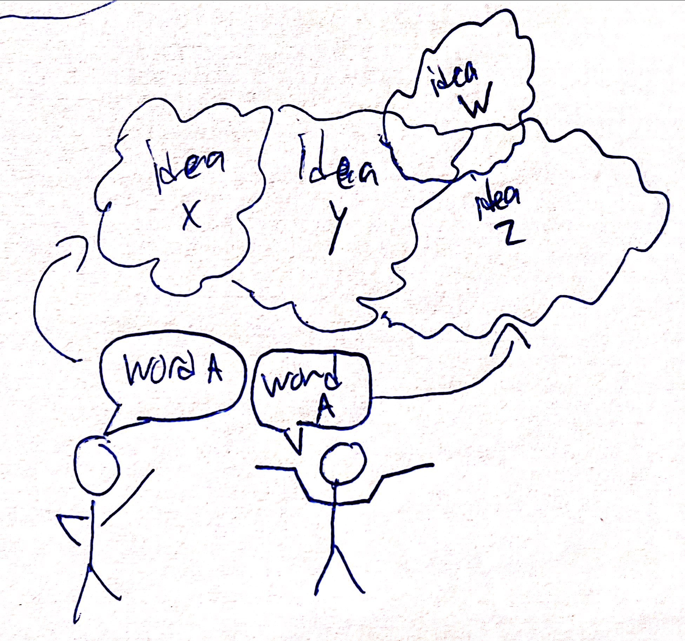

Ideas vs Words
Posted: 12/24/2021
One of the biggest wastes of human life is to misunderstand each other. This happens in our communication. Usually humans communicate with words although a lot of in person communication is done nonverbally (or because of the pandemic video chat communication). Stephen Covey famously said: seek to understand before being understood. Humans seek to understand and to be understood. In conversation a great deal of time is wasted on playing the game of word definitions as in your definition of word X is actually what I call word or phrase Y.
So let us distinguish the word from the idea or the meaning of the word.
- Words change meaning over time
- Ideas are ideas in themselves, metaphysically speaking (think of Plato's world of forms)
- Words try to capture the idea but sometimes fail to do so because they change over time, cultures, and languages
Hypothetical example:
Let's say there is an idea out there in the world metaphysically. For generations your family and community have used the word X to describe this idea. Now let's say metaphysically another person is thinking of the same idea but instead of word X they use word Y or phrase Z. X to the 2nd person means something totally different. The two argue for about an hour about the definition of X and the idea itself. Words are very poor tools to describe experiences and the ideas that come from the experiences. When great sages and yogis speak of their experiences of relatization and Truth this becomes more promentate in trying to put into words experiences that have no words in existence to describe what they are experiences. Hence their words and language of choice is so important.

Examples: God, Yoga, most swear/curse words, education, certain ideas, most subjective things like: definition of role-model, “good” person, purpose of X etc.
In short, let us not bicker or waste a moment of our lives arguing over silly things like what we think something is defined as by our own limited mental models. When we are young and curious about the world we learn: we see grass we think what is that? We touch it, look at it, ask what is this: and learn that it is called grass. Then we never think about it again. Curiosity is over because we have a model and word to know what it is. When we don’t know it is an opportunity to just see what it is. Try defining yourself. Joe is X. Shmo is Y. Change is constant. Personality and subjective things are ephemeral. Things that are generally agreed upon make sense to use words to define the idea. However, for subjective things words cause confusion. Let us understand each other more and bicker less.
In linguistics this whole subject is called word semantics. Very interesting stuff. Used in a sentence: "I think we are just playing word semantics about the word heritage."